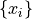
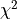

Approximate Bayesian Computation Example¶
January 6, 2020¶
astroML workshop at the 235th Meeting of the American Astronomical Society
Approximate Bayesian Computation¶
Astronomical models are often intrinsically stochastic even when modeling data with negligible measurement errors.
Good examples include simulations of the temperature map of the cosmic microwave background (CMB), of the large-scale structure of galaxy distribution, and of mass and luminosity distributions for stars and galaxies.
In such cases it is hard and often impossible to explicitly write down the data likelihood.
Approximate Bayesian Computation¶
When a simulation is stochastic, one often attempts to vary its input parameters until some adequate metric is well matched between the observed and simulated datasets (e.g., the CMB angular power spectrum, or a parametrized form of the luminosity function).
With the aid of Approximate Bayesian computation (ABC), this tuning process can be made less ad hoc and much more efficient. An excellent tutorial is Turner & Van Zandt (2012, Journal of Mathematical Psychology 56, 69–85).
Approximate Bayesian Computation¶
The basic idea of ABC is quite simple: produce a large number of models (simulations) by sampling the plausible (prior) values of input parameters and select those that “look like the data”.
The distribution of input parameters for the selected subset then approximates the true posterior pdf.
And then repeat until reaching some pre-defined agreement between the values of a distance metric computed with real and simulated data sets.
We will consider here a simple example of a 1-dimensional gaussian sample with a known std. deviation. We will use ABC to constrain its location parameter:  in
in  .
.
This toy example is trivial - we already know that the sample mean is the best estimator of the location parameter. Nevertheless, the structure of more complex examples is identical: only the sample simulator, and perhaps distance metric need to be changed.
For example, we could have a simulator of the distribution of galaxies on the sky and use two-point correlation function as a metric, or a simulator of the star formation process that generates luminosities of stars and use luminosity function to construct the distance metric.
ABC algorithm:¶
Let’s assume that data are described by vector , that we have a simulator for producing a model outcome (simulated data vector ) given a vector of input parameters  , and that their prior distribution, p, is known.
, and that their prior distribution, p, is known.
In the first iteration, input parameters are repeatedly sampled from the prior until the simulated dataset agrees with the data , using some distance metric, and within some initial tolerance
 (which can be very large).
(which can be very large).
ABC algorithm:¶
This sampling is repeated an arbitrary number of times to generate a set of values of desired size (e.g., to estimate precisely its posterior pdf, including higher moments, if needed).
In every subsequent iteration j, the set of parameter values is improved through incremental approximations to the true posterior distribution.
ABC algorithm:¶
Just as in the first iteration, new input parameter values are repeatedly drawn from p until
is satisfied.
ABC algorithm:¶
p is generated using the values from the previous iteration in a step akin to MCMC, which
effectively selects “particles” from the previous weighted pool, and then perturbs them using the kernel K.
In each iteration j, the threshold value decreases; it is typically taken as a value in the 70%–90% range of the cumulative distribution of in the previous iteration. This sampling algorithm is called Population Monte Carlo ABC.
The ABC method typically relies on a low-dimensional summary statistic of the data, S(x), such as the sample mean, rather than the full data set. For example, the distance metric between and is often defined as
Another example of a distance metric would be  between two luminosity functions (data vs. simulation), or two two-point correlation functions.
When  is a sufficient statistic, ABC converges to the true posterior.
is a sufficient statistic, ABC converges to the true posterior.
In summary, the two key ABC aspects are the use of low-dimensional summary statistics of the data (instead of data likelihood) and MCMC-like intelligent parameter optimization.
The following code is modeled after Figure 5.29 from the book: https://www.astroml.org/book_figures/chapter5/fig_ABCexample.html
import numpy as np
from matplotlib import pyplot as plt
from scipy.stats import norm
### generic ABC tools
# return the gaussian kernel values
def kernelValues(prevThetas, prevStdDev, currentTheta):
return norm(currentTheta, prevStdDev).pdf(prevThetas)
# return new values, scattered around an old value using gaussian kernel
def kernelSample(theta, stdDev, Nsample=1):
# returns 1-D array of length N
return np.random.normal(theta, stdDev, Nsample)
# kernel scale
def KLscatter(x, w, N):
sample = weightedResample(x, N, w)
# this optimal scale for the kernel was derived by minimizing
# the Kullback-Leibler divergence
return np.sqrt(2) * np.std(sample)
# compute new weight
def computeWeight(prevWeights, prevThetas, prevStdDev, currentTheta):
denom = prevWeights * kernelValues(prevThetas, prevStdDev, currentTheta)
return prior(prevThetas) / np.sum(denom)
def weightedResample(x, N, weights):
# resample N elements from x with replacement, with selection
# probabilities proportional to provided weights
p = weights / np.sum(weights)
# returns 1-D array of length N
return np.random.choice(x, size=N, replace=True, p=p)
### specific ABC tools
# ABC distance metric
def distance(x, y):
return np.abs(np.mean(x) - np.mean(y))
# flat prior probability
def prior(allThetas):
return 1.0 / np.size(allThetas)
# ABC iterator
def doABC(data, Niter, Ndraw, D, theta, weights, eps, accrate, simTot, sigmaTrue, verbose=False):
ssTot = 0
Ndata = np.size(data)
## first sample from uniform prior, draw samples and compute their distance to data
for i in range(0, Ndraw):
thetaS = np.random.uniform(thetaMin, thetaMax)
sample = simulateData(Ndata, thetaS, sigmaTrue)
D[0][i] = distance(data, sample)
theta[0][i] = thetaS
weights[0] = 1.0 / Ndraw
scatter = KLscatter(theta[0], weights[0], Ndraw)
eps[0] = np.percentile(D[0], 50)
## continue with ABC iterations of theta
for j in range(1, Niter):
print('iteration:', j)
thetaOld = theta
weightsOld = weights / np.sum(weights)
# sample until distance condition fullfilled
ss = 0
for i in range(0, Ndraw):
notdone = True
# sample repeatedly until meeting the distance threshold Ndraw times
while notdone:
ss += 1
ssTot += 1
# sample from previous theta with probability given by weights: thetaS
# nb: weightedResample returns a 1-D array of length 1
thetaS = weightedResample(theta[j-1], 1, weights[j-1])[0]
# perturb thetaS with kernel
# nb: kernelSample returns a 1-D array of length 1
thetaSS = kernelSample(thetaS, scatter)[0]
# generate a simulated sample
sample = simulateData(Ndata, thetaSS, sigmaTrue)
# and check the distance threshold
dist = distance(data, sample)
if (dist < eps[j-1]):
# met the goal, another acceptable value!
notdone = False
# new accepted parameter value
theta[j][i] = thetaSS
D[j][i] = dist
# get weight for new theta
weights[j][i] = computeWeight(weights[j-1], theta[j-1], scatter, thetaSS)
# collected Ndraw values in this iteration, now
# update the kernel scatter value using new values
scatter = KLscatter(theta[j], weights[j], Ndraw)
# threshold for next iteration
eps[j] = np.percentile(D[j], DpercCut)
accrate[j] = 100.0*Ndraw/ss
simTot[j] = ssTot
if (verbose):
print(' number of sim. evals so far:', simTot[j])
print(' sim. evals in this iter:', ss)
print(' acceptance rate (%):', accrate[j])
print(' new epsilon:', eps[j])
print(' KL sample scatter:', scatter)
return ssTot
def plotABC(theta, weights, Niter, data, muTrue, sigTrue, accrate, simTot):
Nresample = 100000
Ndata = np.size(data)
xmean = np.mean(data)
sigPosterior = sigTrue / np.sqrt(Ndata)
truedist = norm(xmean, sigPosterior)
x = np.linspace(-10, 10, 1000)
for j in range(0, Niter):
meanT[j] = np.mean(theta[j])
stdT[j] = np.std(theta[j])
# plot
fig = plt.figure(figsize=(10, 7.5))
fig.subplots_adjust(left=0.1, right=0.95, wspace=0.24,
bottom=0.1, top=0.95)
# last few iterations
ax1 = fig.add_axes((0.55, 0.1, 0.35, 0.38))
ax1.set_xlabel(r'$\mu$')
ax1.set_ylabel(r'$p(\mu)$')
ax1.set_xlim(1.0, 3.0)
ax1.set_ylim(0, 2.5)
for j in [15, 20, 25]:
sample = weightedResample(theta[j], Nresample, weights[j])
ax1.hist(sample, 20, density=True, histtype='stepfilled',
alpha=0.9-(0.04*(j-15)))
ax1.plot(x, truedist.pdf(x), 'r')
ax1.text(1.12, 2.25, 'Iter: 15, 20, 25', style='italic',
bbox={'facecolor': 'red', 'alpha': 0.5, 'pad': 10})
# first few iterations
ax2 = fig.add_axes((0.1, 0.1, 0.35, 0.38))
ax2.set_xlabel(r'$\mu$')
ax2.set_ylabel(r'$p(\mu)$')
ax2.set_xlim(-4.0, 8.0)
ax2.set_ylim(0, 0.5)
for j in [2, 4, 6]:
sample = weightedResample(theta[j], Nresample, weights[j])
ax2.hist(sample, 20, density=True, histtype='stepfilled',
alpha=(0.9-0.1*(j-2)))
ax2.text(-3.2, 0.45, 'Iter: 2, 4, 6', style='italic',
bbox={'facecolor': 'red', 'alpha': 0.5, 'pad': 10})
# mean and scatter vs. iteration number
ax3 = fig.add_axes((0.55, 0.60, 0.35, 0.38))
ax3.set_xlabel('iteration')
ax3.set_ylabel(r'$<\mu> \pm \, \sigma_\mu$')
ax3.set_xlim(0, Niter)
ax3.set_ylim(0, 4)
iter = np.linspace(1, Niter, Niter)
meanTm = meanT - stdT
meanTp = meanT + stdT
ax3.plot(iter, meanTm)
ax3.plot(iter, meanTp)
ax3.plot([0, Niter], [xmean, xmean], ls="--", c="r", lw=1)
# data
ax4 = fig.add_axes((0.1, 0.60, 0.35, 0.38))
ax4.set_xlabel(r'$x$')
ax4.set_ylabel(r'$p(x)$')
ax4.set_xlim(-5, 9)
ax4.set_ylim(0, 0.26)
ax4.hist(data, 15, density=True, histtype='stepfilled', alpha=0.8)
datadist = norm(muTrue, sigTrue)
ax4.plot(x, datadist.pdf(x), 'r')
ax4.plot([xmean, xmean], [0.02, 0.07], c='r')
ax4.plot(data, 0.25 * np.ones(len(data)), '|k')
# acceptance rate vs. iteration number
ax5 = fig.add_axes((1.00, 0.60, 0.35, 0.38))
ax5.set_xlabel('iteration')
ax5.set_ylabel(r'acceptance rate (%)')
ax5.set_xlim(0, Niter)
# ax5.set_ylim(0, 4)
iter = np.linspace(1, Niter, Niter)
ax5.plot(iter, accrate)
# the number of simulations vs. iteration number
ax6 = fig.add_axes((1.00, 0.10, 0.35, 0.38))
ax6.set_xlabel('iteration')
ax6.set_ylabel(r'total sims evals')
ax6.set_xlim(0, Niter)
# ax6.set_ylim(0, 4)
iter = np.linspace(1, Niter, Niter)
ax6.plot(iter, simTot)
plt.show()
def simulateData(Ndata, mu, sigma):
# simple gaussian toy model
return np.random.normal(mu, sigma, Ndata)
def getData(Ndata, mu, sigma):
# use simulated data
return simulateData(Ndata, mu, sigma)
# "observed" data:
np.random.seed(0) # for repeatability
Ndata = 100
muTrue = 2.0
sigmaTrue = 2.0
data = getData(Ndata, muTrue, sigmaTrue)
dataMean = np.mean(data)
# very conservative choice for initial tolerance
eps0 = np.max(data) - np.min(data)
# (very wide) limits for uniform prior
thetaMin = -10
thetaMax = 10
# ABC sampling parameters
Ndraw = 1000
Niter = 26
DpercCut = 80
# arrays for tracking iterations
theta = np.empty([Niter, Ndraw])
weights = np.empty([Niter, Ndraw])
D = np.empty([Niter, Ndraw])
eps = np.empty([Niter])
accrate = np.empty([Niter])
simTot = np.empty([Niter])
meanT = np.zeros(Niter)
stdT = np.zeros(Niter)
numberSimEvals = doABC(data, Niter, Ndraw, D, theta, weights, eps, accrate, simTot, sigmaTrue, True)
iteration: 1
number of sim. evals so far: 2810.0
sim. evals in this iter: 2810
acceptance rate (%): 35.587188612099645
new epsilon: 3.747800742428658
KL sample scatter: 3.9088207666206944
iteration: 2
number of sim. evals so far: 4529.0
sim. evals in this iter: 1719
acceptance rate (%): 58.17335660267597
new epsilon: 2.831756063394538
KL sample scatter: 3.0052790682293784
iteration: 3
number of sim. evals so far: 6335.0
sim. evals in this iter: 1806
acceptance rate (%): 55.370985603543744
new epsilon: 2.160458055603449
KL sample scatter: 2.2587673148212857
iteration: 4
number of sim. evals so far: 8134.0
sim. evals in this iter: 1799
acceptance rate (%): 55.58643690939411
new epsilon: 1.6456625235625149
KL sample scatter: 1.8304632418084037
iteration: 5
number of sim. evals so far: 10047.0
sim. evals in this iter: 1913
acceptance rate (%): 52.27391531625719
new epsilon: 1.257612187267058
KL sample scatter: 1.3668563521112371
iteration: 6
number of sim. evals so far: 11907.0
sim. evals in this iter: 1860
acceptance rate (%): 53.763440860215056
new epsilon: 0.9828161376253346
KL sample scatter: 1.042719126541488
iteration: 7
number of sim. evals so far: 13754.0
sim. evals in this iter: 1847
acceptance rate (%): 54.141851651326476
new epsilon: 0.7296646422530663
KL sample scatter: 0.830011249695032
iteration: 8
number of sim. evals so far: 15780.0
sim. evals in this iter: 2026
acceptance rate (%): 49.35834155972359
new epsilon: 0.5734611153568521
KL sample scatter: 0.6471250006146377
iteration: 9
number of sim. evals so far: 17725.0
sim. evals in this iter: 1945
acceptance rate (%): 51.41388174807198
new epsilon: 0.45045526628923327
KL sample scatter: 0.5594171662693772
iteration: 10
number of sim. evals so far: 19780.0
sim. evals in this iter: 2055
acceptance rate (%): 48.661800486618006
new epsilon: 0.3508712684406295
KL sample scatter: 0.4728938684640442
iteration: 11
number of sim. evals so far: 22014.0
sim. evals in this iter: 2234
acceptance rate (%): 44.76275738585497
new epsilon: 0.27136332572706756
KL sample scatter: 0.4023816615583871
iteration: 12
number of sim. evals so far: 24600.0
sim. evals in this iter: 2586
acceptance rate (%): 38.669760247486465
new epsilon: 0.21467684783100782
KL sample scatter: 0.3483870188455545
iteration: 13
number of sim. evals so far: 27366.0
sim. evals in this iter: 2766
acceptance rate (%): 36.153289949385396
new epsilon: 0.17172532980341643
KL sample scatter: 0.3251422736855301
iteration: 14
number of sim. evals so far: 30758.0
sim. evals in this iter: 3392
acceptance rate (%): 29.4811320754717
new epsilon: 0.1339438876553719
KL sample scatter: 0.3161626302391143
iteration: 15
number of sim. evals so far: 34700.0
sim. evals in this iter: 3942
acceptance rate (%): 25.36783358701167
new epsilon: 0.10851469529879447
KL sample scatter: 0.30140014715088465
iteration: 16
number of sim. evals so far: 39649.0
sim. evals in this iter: 4949
acceptance rate (%): 20.20610224287735
new epsilon: 0.08671394512232951
KL sample scatter: 0.29343062978627743
iteration: 17
number of sim. evals so far: 45538.0
sim. evals in this iter: 5889
acceptance rate (%): 16.98081168279844
new epsilon: 0.06880583399854477
KL sample scatter: 0.3167788133378119
iteration: 18
number of sim. evals so far: 53235.0
sim. evals in this iter: 7697
acceptance rate (%): 12.992074834351046
new epsilon: 0.05684009106567408
KL sample scatter: 0.2716148078502225
iteration: 19
number of sim. evals so far: 62099.0
sim. evals in this iter: 8864
acceptance rate (%): 11.28158844765343
new epsilon: 0.04468885258966929
KL sample scatter: 0.291729815450315
iteration: 20
number of sim. evals so far: 73550.0
sim. evals in this iter: 11451
acceptance rate (%): 8.732861758798359
new epsilon: 0.03523084288062881
KL sample scatter: 0.28211371862230267
iteration: 21
number of sim. evals so far: 87723.0
sim. evals in this iter: 14173
acceptance rate (%): 7.055669230226487
new epsilon: 0.028027171422800822
KL sample scatter: 0.28566455425290255
iteration: 22
number of sim. evals so far: 106022.0
sim. evals in this iter: 18299
acceptance rate (%): 5.46477949614733
new epsilon: 0.022211537013158634
KL sample scatter: 0.31089018970552496
iteration: 23
number of sim. evals so far: 130186.0
sim. evals in this iter: 24164
acceptance rate (%): 4.138387684158252
new epsilon: 0.017310672157556176
KL sample scatter: 0.27356884968210093
iteration: 24
number of sim. evals so far: 157464.0
sim. evals in this iter: 27278
acceptance rate (%): 3.6659579148031383
new epsilon: 0.013681562311032016
KL sample scatter: 0.28909520482642886
iteration: 25
number of sim. evals so far: 193965.0
sim. evals in this iter: 36501
acceptance rate (%): 2.7396509684666173
new epsilon: 0.011164765216288775
KL sample scatter: 0.2916672133596475
# plot
plotABC(theta, weights, Niter, data, muTrue, sigmaTrue, accrate, simTot)

Conclusions:¶
As shown in the top middle panel in the above figure, the ABC algorithm converges to the correct solution in about 15 iterations.
Between the 15th and the 25th iteration, the tolerance decreases from 0.1 to 0.01 and the acceptance probability decreases from 25% to 2.7%. As a result, the total number of simulation evaluations increases by about a factor of six (from about 30,000 to about 180,000), although there is very little gain for our inference of .
Conclusions:¶
Therefore, the stopping criterion requires careful consideration when the cost of simulations is high (e.g., the maximum acceptable relative change of the estimator can be compared to its uncertainty).
We can have a much smaller number of sim evals if we don’t care about pretty histograms.
For 100 times smaller Ndraw, we expect about 100 times fewer simulation evaluations.
Let’s do it!
## LAST POINT: we can have much smaller Ndraw if we don't care about pretty
## histograms for 100 times smaller Ndraw, expect about 100 times fewer
## simulation evaluations
Ndraw = 10
# arrays for tracking iterations
theta = np.empty([Niter, Ndraw])
weights = np.empty([Niter, Ndraw])
D = np.empty([Niter, Ndraw])
# run ABC
numberSimEvals2 = doABC(data, Niter, Ndraw, D, theta, weights, eps, accrate, simTot, sigmaTrue, True)
iteration: 1
number of sim. evals so far: 16.0
sim. evals in this iter: 16
acceptance rate (%): 62.5
new epsilon: 3.382172501177358
KL sample scatter: 4.215968709849081
iteration: 2
number of sim. evals so far: 31.0
sim. evals in this iter: 15
acceptance rate (%): 66.66666666666667
new epsilon: 2.1589713569679114
KL sample scatter: 1.2419989351788945
iteration: 3
number of sim. evals so far: 46.0
sim. evals in this iter: 15
acceptance rate (%): 66.66666666666667
new epsilon: 1.8210327274810516
KL sample scatter: 1.0197054314561427
iteration: 4
number of sim. evals so far: 58.0
sim. evals in this iter: 12
acceptance rate (%): 83.33333333333333
new epsilon: 0.7750945943459232
KL sample scatter: 0.797736358954423
iteration: 5
number of sim. evals so far: 73.0
sim. evals in this iter: 15
acceptance rate (%): 66.66666666666667
new epsilon: 0.5690041565242981
KL sample scatter: 0.6461739019978467
iteration: 6
number of sim. evals so far: 93.0
sim. evals in this iter: 20
acceptance rate (%): 50.0
new epsilon: 0.33544413819596797
KL sample scatter: 0.41271450725802855
iteration: 7
number of sim. evals so far: 115.0
sim. evals in this iter: 22
acceptance rate (%): 45.45454545454545
new epsilon: 0.23315080652592474
KL sample scatter: 0.3900070857100843
iteration: 8
number of sim. evals so far: 142.0
sim. evals in this iter: 27
acceptance rate (%): 37.03703703703704
new epsilon: 0.13722661732786437
KL sample scatter: 0.22127660755219733
iteration: 9
number of sim. evals so far: 164.0
sim. evals in this iter: 22
acceptance rate (%): 45.45454545454545
new epsilon: 0.11302948977529503
KL sample scatter: 0.250449034952723
iteration: 10
number of sim. evals so far: 225.0
sim. evals in this iter: 61
acceptance rate (%): 16.39344262295082
new epsilon: 0.07858595261148027
KL sample scatter: 0.1894978575552935
iteration: 11
number of sim. evals so far: 289.0
sim. evals in this iter: 64
acceptance rate (%): 15.625
new epsilon: 0.058777201109350495
KL sample scatter: 0.20845182384740657
iteration: 12
number of sim. evals so far: 383.0
sim. evals in this iter: 94
acceptance rate (%): 10.638297872340425
new epsilon: 0.05181113697268893
KL sample scatter: 0.16025549597439864
iteration: 13
number of sim. evals so far: 482.0
sim. evals in this iter: 99
acceptance rate (%): 10.1010101010101
new epsilon: 0.04242079769067413
KL sample scatter: 0.1831340381067212
iteration: 14
number of sim. evals so far: 597.0
sim. evals in this iter: 115
acceptance rate (%): 8.695652173913043
new epsilon: 0.0281600175430186
KL sample scatter: 0.24356279104144424
iteration: 15
number of sim. evals so far: 726.0
sim. evals in this iter: 129
acceptance rate (%): 7.751937984496124
new epsilon: 0.01592375303974274
KL sample scatter: 0.1422976280067622
iteration: 16
number of sim. evals so far: 1056.0
sim. evals in this iter: 330
acceptance rate (%): 3.0303030303030303
new epsilon: 0.009543589371648498
KL sample scatter: 0.14508293485217377
iteration: 17
number of sim. evals so far: 1425.0
sim. evals in this iter: 369
acceptance rate (%): 2.710027100271003
new epsilon: 0.007252405598960721
KL sample scatter: 0.2343784242537285
iteration: 18
number of sim. evals so far: 1851.0
sim. evals in this iter: 426
acceptance rate (%): 2.347417840375587
new epsilon: 0.006186190377834766
KL sample scatter: 0.27415472248158285
iteration: 19
number of sim. evals so far: 3415.0
sim. evals in this iter: 1564
acceptance rate (%): 0.639386189258312
new epsilon: 0.0042522614499568515
KL sample scatter: 0.11156624750755727
iteration: 20
number of sim. evals so far: 4950.0
sim. evals in this iter: 1535
acceptance rate (%): 0.6514657980456026
new epsilon: 0.0030523219136835422
KL sample scatter: 0.16733791773803083
iteration: 21
number of sim. evals so far: 6201.0
sim. evals in this iter: 1251
acceptance rate (%): 0.7993605115907274
new epsilon: 0.0026167158877769656
KL sample scatter: 0.14500926988951582
iteration: 22
number of sim. evals so far: 8220.0
sim. evals in this iter: 2019
acceptance rate (%): 0.4952947003467063
new epsilon: 0.0017704114051227294
KL sample scatter: 0.24851827619176742
iteration: 23
number of sim. evals so far: 10402.0
sim. evals in this iter: 2182
acceptance rate (%): 0.458295142071494
new epsilon: 0.0011809062949680537
KL sample scatter: 0.17238435823894685
iteration: 24
number of sim. evals so far: 14219.0
sim. evals in this iter: 3817
acceptance rate (%): 0.26198585276395076
new epsilon: 0.0009084485215901772
KL sample scatter: 0.11822072981714417
iteration: 25
number of sim. evals so far: 20065.0
sim. evals in this iter: 5846
acceptance rate (%): 0.17105713308244955
new epsilon: 0.0007119057854027666
KL sample scatter: 0.22193036173945535
plotABC(theta, weights, Niter, data, muTrue, sigmaTrue, accrate, simTot)

For “professional” implementations of ABC as an open-source Python code see:
astroABC, abcpmc, and cosmoabc